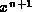
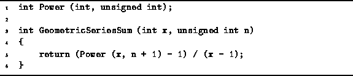
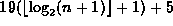
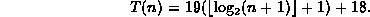
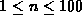
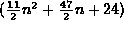
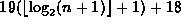

Data Structures and Algorithms
with Object-Oriented Design Patterns in C++
Data Structures and Algorithms
with Object-Oriented Design Patterns in C++
In this example we consider the problem of computing a
geometric series summation
for the last time.
We have already seen two algorithms to compute this summation
in Sections  and
(Programs and ).
and
(Programs and ).
An algorithm to compute a geometric series summation
using the closed-form expression (Equation )
is given in Program .
This algorithm makes use of Program to compute .

Program: Program to compute  using the closed-form expression
using the closed-form expression
To determine the average running time of Program
we will make use of Equation ,
which gives the average running time for the Power function
which is called on line 5.
In this case, the arguments are x and n+1,
so the running time of the call to Power is
.
Adding to this the additional work done on line 5 gives
the average running time for Program :

The running times of the three programs
which compute the geometric series summation
presented in this chapter are tabulated below
in Table
and are plotted for  in Figure .
Figure shows that,
according to our simplified model of the computer,
for n<4, Program has the best running time.
However as n increases,
Program is clearly the fastest of the three
and Program is the slowest for all values of n.
| program | T(n) |
| Program |  |
|
Program | 13n+22 |
|
Program |  |

Figure: Plot of Running Time vs. n for Programs , and
 Copyright © 1997 by Bruno R. Preiss, P.Eng. All rights reserved.
Copyright © 1997 by Bruno R. Preiss, P.Eng. All rights reserved.